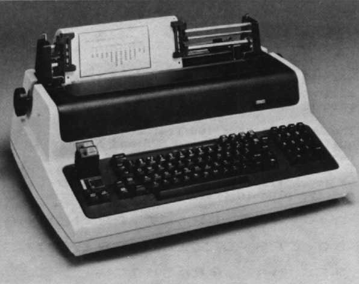
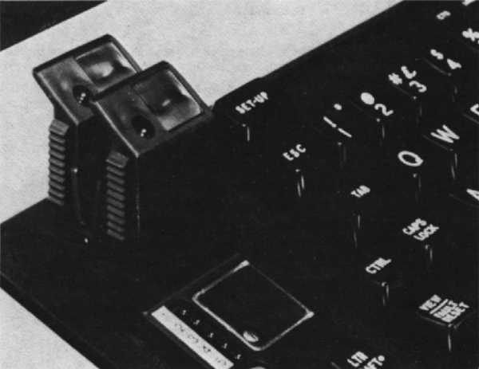

| Chapter 9 | Contents | Chapter 11 |
Chapter 10
The desktop Letterprinter 100 and Letterwriter 100 are serial, asynchronous printers using dot-matrix technology. Packed into these printers are a variety of capabilities – high-speed printing, letter-quality printing, multiple typefaces, full bit-map graphics and national character sets. The LA100 series can be used for applications that require both text and graphics output, such as drafts of business and technical reports, graphs and bar charts. In addition to draft-quality and letter-quality printing, the Letterwriter and Letterprinter feature an optional memo-quality mode suitable for internal memos.
What's truly remarkable about the Letterprinter 100 and Letterwriter 100 is that you can select from a variety of resident typefaces or an ever greater selection of plug-in font cartridges. A maximum of two plug-in cartridges can be used at any time, while up to three additional internal fonts (on read-only memory chips) can be field-installed. Therefore, you can have five different character fonts available for printing at any one time – either as five internal fonts or as three internal and two external fonts. You can change the fonts any time during printing. When you combine typeface variety with expanded or compressed character widths and graphics printing, it is easy to see that individualized and customized copies can be created. Any combination of styles can be contained within a single report, page, or even a single line.
There are seven versions of the LA100 series.
The major features of the LA100 series are:
|  |
The Letterprinter 100 and Letterwriter 100 offer three program-selectable text printing modes. Using a nine-wire printhead enables the LA100 series to print below-the-line descenders, such as on the letters "p," "q," and "y," as well as underlining in all text modes. The graphics mode can be used to plot graphs and draw pictures that include shading and curved lines.
At a speed of 30 characters per second, the printhead uses a 33 by 18 matrix of dots to produce sharp, clear characters. This letter-quality printing is suitable for your reports, proposals and business correspondence.
The seven-by-nine dot-matrix character cell provides high-speed output at the rate of 240 characters per second. This is suitable for draft and data printing. Printing is done through a bidirectional technique in which the printhead seeks the shortest distance to the next printable character, rapidly skipping over blank spaces.
The printhead prints a character using a matrix of 33 by 9 dots and produces a character that is darker than draft-quality characters, but not as clear and dark as letter-quality ones. Memo mode prints 80 characters per second and is available as an optional ROM cartridge or ROM chip.
In graphics mode, the Letterprinter and Letterwriter 100s print 72 dots per inch vertically. The number of horizontal dots per inch depends on which microcode version your model uses.
Version 1 microcode gives you 132 horizontal columns. Version 2 microcode, found on receive-only models, lets you select from eight ranges of horizontal columns.
These let your LA100 print an infinite variety of pictures and graphs, including pie and bar charts, logos, signatures, and unique characters.
A predetermined escape sequence from the host enables the LA100 to enter the bitmap graphics mode. Microcode control of individual printhead wires makes every dot addressable by the host and enables images displayed on a video screen to be faithfully reproduced.
The LA100 series has a variety of character sets and typefaces for you to select from. These include:
Character size, dependent upon the print mode selected, lets you print double-width and compressed characters.
Normal width, non-compressed character sizes can be chosen from 10, 12, 13.2 or 16.5 characters per inch for draft printing, and 10 or 12 characters per inch for memo or letter-quality printing.
Double-width characters print at 5, 6, 6.6 and 8.25 characters per inch during draft mode and 5 or 6 characters per inch in memo or letter-quality printing.
The compressed font fits 132 columns to display a full spreadsheet on standard 21.6 cm (8.5 inch) wide page.
The versatile Letterprinter 100 and Letterwriter 100 can print on single sheets, roll and fanfold paper ranging from 7.6 to 37.8 cm (3 to 14.9 inches) wide. They print on four-part forms (one original and three copies) to a maximum thickness of 0.051 cm (0.020 inches).
| Part Number | Description |
|---|---|
| LA10X-FL | Multifont Adapter Option This is a chimney-shaped receptacle that replaces the left snap-off cover plate on the LA100 keyboard bezel. It allows you to plug cartridges containing font ROM chips into the printer. This adapter has space for two cartridges at any one time and provides access to a potentially unlimited number of customer-installable fonts or character sets. This option is standard on all models except the LA100-BA and the LA100-BB. |
| LA10X-EL | Forms Tractor Option Provides an adjustable-width forms tractor capability for feeding fanfold paper into the LA100. |
| LA10X-AA | High-resolution Courier-10 US/UK primary ROM cartridge |
| LA10X-AB | High-resolution Courier-12 US/UK primary ROM cartridge |
| LA10X-AC | High-resolution Gothic-12 US/UK primary ROM cartridge |
| LA10X-AD | High-resolution Orator-10 US/UK primary ROM cartridge |
| LA10X-AF | High-resolution Gothic-10 US/UK primary ROM cartridge |
| LA10X-AH | Medium-resolution Courier-10 US/UK primary ROM cartridge |
| LA10X-AJ | Medium-resolution Orator-10 US/UK primary ROM cartridge |
| LA10X-BA | High-resolution Courier-10 international overlay ROM cartridge |
| LA10X-BB | High-resolution Courier-12 international overlay ROM cartridge |
| LA10X-BC | High-resolution Gothic-12 international overlay ROM cartridge |
| LA10X-BD | High-resolution Orator-10 international overlay ROM cartridge |
| LA10X-BF | High-resolution Gothic-10 international overlay ROM cartridge |
| LA10X-BH | Medium-resolution Courier-10 international overlay ROM cartridge |
| LA10X-BJ | Medium-resolution Orator-10 international overlay ROM cartridge |
| LA10X-CA | High-resolution Courier-10 US/UK primary ROM chip |
| LA10X-CB | High-resolution Courier-12 US/UK primary ROM chip |
| LA10X-CC | High-resolution Gothic-12 US/UK primary ROM chip |
| LA10X-CD | High-resolution Orator-10 US/UK primary ROM chip |
| LA10X-CF | High-resolution Gothic-10 US/UK primary ROM chip |
| LA10X-CH | Medium-resolution Courier-10 US/UK primary ROM chip |
| LA10X-CJ | Medium-resolution Orator-10 US/UK primary ROM chip |
| LA10X-DA | High-resolution Courier-10 international overlay ROM chip |
| LA10X-DB | High-resolution Courier-12 international overlay ROM chip |
| LA10X-DC | High-resolution Gothic-12 international overlay ROM chip |
| LA10X-DD | High-resolution Orator-10 international overlay ROM chip |
| LA10X-DF | High-resolution Gothic-10 international overlay ROM chip |
| LA10X-DH | Medium-resolution Courier-10 international overlay ROM chip |
| LA10X-DJ | Medium-resolution Orator-10 international overlay ROM chip |
| LA10X-GA | High-resolution Courier-10 LA10X-AA and LA10X-BA |
| LA10X-GB | High-resolution Courier-12 LA10X-AB and LA10X-BB |
| LA10X-GC | High-resolution Gothic-12 LA10X-AC and LA10X-BC |
| LA10X-GD | High-resolution Orator-10 LA10X-AD and LA10X-BD |
| LA10X-GF | High-resolution Gothic-10 LA10X-AF and LA10X-BF |
| LA10X-GH | Medium-resolution Courier-10 LA10X-AH and LA10X-BH |
| LA10X-GJ | Medium-resolution Orator-10 LA10X-AJ and LA10X-BJ |
| LA10X-HA | High-resolution Courier-10 LA10X-CA and LA10X-DA |
| LA10X-HB | High-resolution Courier-12 LA10X-CB and LA10X-DB |
| LA10X-HC | High-resolution Gothic-12 LA10X-CC and LA10X-DC |
| LA10X-HD | High-resolution Orator-10 LA10X-CD and LA10X-DD |
| LA10X-HF | High-resolution Gothic-10 LA10X-CF and LA10X-DF |
| LA10X-HH | Medium-resolution Courier-10 LA10X-CH and LA10X-DH |
| LA10X-HJ | Medium-resolution Orator-10 LA10X-CJ and LA10X-DJ |
NOTE
Primary font ROMs contain US and UK ASCII character sets, International overlay fonts
contain ASCII German, French, Italian, Spanish, Finnish, Norwegian/Danish, Swedish,
French Canadian and VT100 line-drawing character sets.
The following accessories, supplies, components, and spares are available for the Letterprinter 100 and Letterwriter 100. Check with your sales representative or Digital's Installed Base Group for the latest information.
| Part Number | Description |
|---|---|
| LA10R-06 | 6 ribbon cartridges |
| Part Number | Description |
|---|---|
| H9850-FA | Paper caddy with four 5.1 cm (2 in) swivel casters for transporting printer paper, 40 cm wide × 29.8 cm deep (15-3/4 in × 11-3/4 in) |
| LAX34-ZA | Portable carrying case for terminal (also room for cables, fanfold paper, and either an acoustic coupler/modem or LAX34-AL paper tractor assembly). 23.5 cm × 60.96 cm wide × 48.3 cm deep (9-1/4 in × 24 in × 19 in) |
| LA10X-SL | Printer stand |
| LAX34-SP | Stand paper catcher |
| LAX34-SQ | Stand paper shelf |
| LAX34-SW | Printer paper output tray |
| DF02-AA | Direct-connect, Bell 103J equivalent, 300 b/s, full duplex, asynchronous modem with EIA RS232-C interface |
| DF03-AA | Direct-connect, Bell 212A equivalent, 300/1200 b/s, full duplex, synchronous modem with EIA RS232-C interface |
| H9850-HA | Dust cover for paper roll |
| H9850-HB | Dust cover for tractors |
| STKIT-AA | Systems Terminal Tool Kit (60 Hz) |
| STKIT-AB | Systems Terminal Tool Kit (50 Hz) |
| Part Number | Description |
|---|---|
| 4A-LA100-AA | Letterwriter 100 spares kit |
| 4A-LA100-RA | Letterprinter 100 receive-only spares kit |
The font features on the Letterprinter 100 and Letterwriter 100 give you a wide variety of standard character sets and fonts to choose from. Fonts can be changed under program control or by inserting a plug-in ROM cartridge. These fonts let you change any of a character's four attributes – typestyle (font), size (pitch), quality (density), and character set – without changing a printwheel or other print element.
Let's take U.S./U.K. Courier 10 High Density as an example to illustrate these four character attributes.
Any or all of these attributes can be changed. A group of characters of the same style, size and density, organized in one or more character sets is called a dot pattern set (DPS). With the Letterprinter and Letterwriter 100 you can have up to five DPS's installed at once. This allows you to change typestyle, size, quality and character set electronically. These DPS are accessible by either you or the host CPU.
DPS ROMs are referred to as font ROMs since they are often used to change typestyle. However, the typestyle is but one of the four attributes that can be changed. Throughout this chapter, the word font refers to only the typestyle, while DPS is a general term applied to any character attribute.
A DPS is stored in a read-only memory (ROM). A single 64K ROM contains about 94 characters. A DPS can consist of one or two 94-character ROMs. If the DPS consists of just one ROM, this stand-alone ROM is called a primary ROM. When a DPS consists of two ROMs, one is a stand-alone ROM and the other is a complementary ROM, called an overlay. An overlay cannot be used by itself.
|  |
The character processing protocol used by the LA100 printers allows 128 (7-bit mode) or 256 (8-bit mode) character codes. Thirty-four (7-bit mode) or 68 (8-bit mode) characters are used for control characters leaving 94 (7-bit mode) or 188 (8-bit mode) printable characters. This means you can access one (7-bit mode) or two (8-bit mode) groups of 94 characters at once. Each group of 94 characters forms a character set.
Character sets can be changed any time using set-up mode or the ANSI selection sequences. Refer to your Letterwriter 100 Operator Guide and LA100-Series Programmer Reference Manual for more details. Digital has a DPS for such languages as English, French, Italian and others, as well as technical symbols, APL and the VT100 line-drawing set. DPS can also cover individual needs such as musical symbols and company logos.
The LA100-series can print characters using different typestyles or fonts. You can choose from Courier, Gothic and Orator. The typestyle can be changed any time electronically under program control or manually by inserting a different plug-in cartridge or pushing the select button. See the LA100-Series Programmer Reference Manual for more details.
Five typestyles and a large number of character sets can be resident in the LA100 at the same time. If you want to change the way a character looks, you change the typestyle, for example, from Courier to Gothic, a difference similar to that between a and a. If you need a national character, ä, or special symbol, π, you select different character sets.
Pitch is the size of a character cell. It consists of vertical and horizontal pitch. On the LA100-series, the vertical pitch defines the height of the character cell, while the horizontal pitch defines the width. The vertical pitch is fixed at 0.135 inches. You can choose the horizontal pitch you want at either 5, 6, 6.6, 8.25, 10, 12, 13.2 or 16.5 characters per inch.
Each DPS has a designed or standard pitch, which is usually 10 or 12 characters per inch, and is optimized to give the best result at that pitch. For example, U.S./U.K. Courier 10 High Density used 10 characters per inch as the standard pitch.
Characters printed in draft mode or low density can be printed using any of the eight horizontal pitch selections since the pattern is modified to match the requested pitch. To achieve the desired quality, characters printed in letter-quality mode (high density) use different dot patterns for different pitches, unless the requested pitch is exactly double the standard pitch.
For example, when printing characters in high density using Courier 10, the printer uses the same DPS to print characters at 10 or 5 characters per inch. For other pitches using Courier 10, the DPS is modified to fit the proper-sized character cell.
The horizontal pitch can be changed any time using set-up, the multiple font option, if installed, or the ANSI selection sequences. Refer to the Letterwriter 100 Operator Guide or the Programmer Reference Manual for more details.
The quality of type is changed on the LA100-series by varying the number of dots within a character cell. There are three levels of quality available for the LA100:
Within one DPS you have a draft mode grid and a letter mode grid. If you want a particular type style in both medium and high densities, you need two separate DPS's.
The quality can be changed any time using the AUTO MAN and LETTER DRAFT keys or the ANSI-compatible selection sequences. Check your Letterwriter 100 Operator Guide and LA100-Series Programmers Reference Manual for more detail.
The DPS's contain all of the information required to define each character, each character set, the style, pitch, density, and overlay characteristics. Because all of the character attributes are contained in the DPS and not in the printer, Digital can create new DPS ROMs to cover your special applications. The following are some examples of special-use DPS ROMs that you can create or have Digital create for you.
You can install a primary cartridge in either slot 2 or slot 4. When installing a primary and overlay pair, you must install the primary in slot 2 and the overlay in slot 4. An overlay cartridge installed without the corresponding primary cartridge will not print.
Whether you install the cartridge or the overlay first is not important, nor is it necessary to turn the printer off. However, if you install or attempt to change a cartridge while the terminal is printing, the Letterprinter 100 and Letterwriter 100 abort the line currently printing and the following line. Since the DPS cannot be accessed while the cartridge is in motion, the two lines already in the buffer are printed using blanks. Once the motion of the printhead stops, the printer restarts the printing process.
Installing a ROM DPS is easy. Just follow these steps.
There are three basic tests to check proper cartridge installation.
To ensure proper operation of DPS ROM cartridges, make sure that you have:
When power is applied or when a cartridge is inserted, the printer performs an internal check. It tries to access the DPS ROMs and if a DPS ROM is present, it is tested. If the test fails, the printer indicates the faulty DPS ROM by flashing the DSR and POWER/FAULT lights.
If an error is detected, turn off the power to the printer. DPS ROMs are checked sequentially until a failure, if present, is displayed. In the case of a failure, check that the ROM was properly installed. If not, reinstall it correctly. If there is still no change, replace the faulty cartridge and then turn the printer back on. If an error still persists, check your service documentation for more details.
Print the status message to check that the printer recognizes an installed DPS. The third line of the status message contains a unique three-digit code for each DPS installed, up to five. Table 10-2 lists the currently available DPS's and their corresponding ROM identification codes.
| Identification Code | DPS |
|---|---|
| 001 | US/UK Gothic 10 High Density, Primary |
| 002 | International Gothic 10 High Density, Primary and Overlay |
| 003 | US/UK Gothic 12 High Density, Primary |
| 004 | International Gothic 12 High Density, Primary and Overlay |
| 005 | US/UK Courier 10 High Density, Primary |
| 006 | International Courier 10 High Density, Overlay |
| 007 | US/UK Courier 12 High Density, Primary |
| 008 | International Courier 12 High Density Overlay |
| 009 | US/UK Orator 10 High Density, Primary |
| 010 | International Orator 10 High Density, Overlay |
| 069 | US/UK Courier 10 Medium Density, Primary |
| 070 | International Courier 10 Medium Density, Overlay |
| 073 | US/UK Orator 10 Medium Density, Primary |
| 074 | International Orator 10 Medium Density, Overlay |
| 129 | Symbol 10 High Density, Primary |
Notes:
001 - 064: Indicates high density standard DPS
065 - 128: Indicates medium density standard DPS
129 - 192: Indicates high density special purpose DPS
193 - 200: Indicates medium density special purpose DPS
A standard DPS with an odd identification code indicates a primary DPS containing the U.S. and U.K. character sets. A standard DPS with an even identification code indicates an overlay DPS containing the following character sets:
A DPS is installed in slot 1 inside the printer, so the status message always prints a three-digit code for DPS 1. If a DPS is installed in slot 2, the message has a three-digit code for slot 2.
LA100 V1.2 RO
0.4K Buffer
DPS's: 005 007 009 001 ...
| | | | |
| | | | |
Slot 1 | | | |
| | | |
Slot 2 | | |
| | |
Slot 3 | |
| |
Slot 4 |
|
Slot 5 |
If a DPS is not installed or installed incorrectly, the status message shows three periods, as shown here for DPS 5.
LA100 V1.2 RO
0.4K Buffer
DPS's: 005 ... 009 ... ...
| |
| |
Slot 1 |
|
Slot 2 |
This status message indicates that the printer does not recognize that a DPS is installed in slot 2. Check or replace the DPS ROM installed in slot 2.
In order to print a status message, first check that the printer is on. For the Letterprinter 100, press and lock the ON LINE OFF key in the down position. Press and lock the SELF TEST key in the down position. If you are using the Letterwriter 100, enter set-up mode and press 8.
The LA100 Series has four different categories of controls and indicators that you can use to control and monitor terminal operation: terminal/printer controls, keyboard, visual indicators and audible indicators. Naturally since the Letterprinter 100 is a receive-only printer, it does not have a keyboard.
This switch changes the terminal to match the available AC input voltage range. Note: Failure to set the voltage selector switch to the correct voltage range may damage the power supply.
This switch turns the power to the terminal on or off. The on position is labeled 1, and the off position is labeled 0. A keyboard indicator goes on to indicate that power is on.
These knobs advance paper 1/48 of an inch at a time.
This lever is used to reposition or remove friction-feed paper from the terminal.
This lever controls space between the printhead and the platen. It enables you to adjust the printhead for clear printing on single or multipart forms.
This knob tightens the ribbon when installing a new ribbon cartridge.
This switch disables paper out detection.
As part of the multiple font option, this switch forces (selects) a font or returns control to the host. Each time the switch is pressed the LA100 advances to the next state, skipping fonts that are not installed. If the currently force font is removed, the printer advances to the next valid state. Note: To force a font means that everything is printed using that font despite all computer commands.
The Letterwriter 100's keyboard is arranged like a standard office typewriter and operates in a similar manner. The keyboard keys are grouped into three categories: standard keys, function keys and set-up keys.
The standard keys are standard typewriter keys and include CAPS LOCK and SHIFT. These keys are used to send characters to the computer. In local mode or when local echo is selected, they operate the same as typewriter keys.
Automatic repeat allows for a key that is depressed for more than half a second to send its code to the computer repeatedly until the key is released. Normally, you would just press the desired key and release it, sending the desired key to the host computer once.
The CAPS LOCK key is a two-position locking key, similar to the LOCK key on a standard typewriter. When it is in the down position, the alphabetic keys generate uppercase characters, regardless of SHIFT key position. When it is in the up position, the alphabetic keys generate lowercase or uppercase characters. The numeric, special symbol, function, and numeric keypad keys are not affected by the CAPS LOCK key in either position.
Both of the SHIFT keys cause all the standard keys on the keyboard to generate uppercase characters or top row symbols, such as ! or #. The SHIFT keys do not affect the function keys or the numeric keypad keys.
The Letterwriter 100 features over 17 function keys. Some of these keys and their functions are:
The set-up keys allow you to tailor your terminal's operation to your needs. The SET-UP key can be used with almost any other key to let you perform a specific function. The SET-UP key itself lets you enter and exit from Set-Up mode.
The Set-Up keys allow you to:
When power is applied to the printer, the visual indicators are on for about six-tenths of a second to allow you to check for a bad indicator.
| Indicator | Function |
|---|---|
| Power/Fault Indicator | When power is applied, this light goes on and stays on until the printer is turned off. If the light is blinking, it indicates a fault in the printer. |
| Set-Up Indicator | Blinks when the printer is in set-up mode. The indicator stays on for about nine seconds when the operator-selected features are being loaded into the nonvolatile memory. |
| DSR | Lights when the printer receives the Data Set Ready (DSR) signal. These lights show the state of continuous signals on the EIA port. They are on when the signal is on, and off, when the signal is off. It is also used with the POWER/FAULT indicator to show any errors during the power-up self-test. |
| Line Indicator | When this indicator is on, the printer is on-line. When it is off, the printer is local. |
| CTS Indicator | When this is lit, the printer has received the Clear To Send (CTS) signal. |
| Font Indicator | These indicators show the currently selected font. One light on indicates that the font shown is forced. One light off indicates that no font is forced. The indicator that is off shows the currently computer selected font. |
| ROM Cartridge | Lights when the ROM cartridge is seated correctly in the ROM cartridge socket. |
| Column Indicator | This shows the current position, by column, of the printhead. Scales are provided for the four horizontal pitch selection. |
There are two audible indicators in the printer. If the keyclick feature was selected in set-up, a keyclick sound occurs when any key is pressed. A bell tone will sound under any of the following conditions:
The corrective action to take for any of these situations can be found in detail in the Letterwriter 100 Operator Guide.
Information on set-up features and escape sequences is outlined in this section. For a summary of set-up features and escape sequences, refer to Appendix G.
This section contains brief descriptions of some of the operator-selectable features of the Letterprinter 100 and Letterwriter 100. These set-up features enable you to prepare the terminal for specific applications.
Sometimes the specific procedure or escape sequence required to select a particular feature will be described in detail. If you require additional information, consult the Letterwriter 100 Operator Guide or the LA100-Series Programmers Reference Manual.
The operator-selectable features can only be changed while the terminal is in SET-UP. The suggested sequence to change or to select set-up features is:
You should note that storing a feature saves the feature for future use.
Set-Up can be entered while in On-Line or Local mode. To prevent the loss of data, take care to enter Set-Up only when the host is not transmitting characters, or if the restraint control (XON/XOFF) feature is selected and is recognized by the computer.
In order for the printer to transmit and receive data, the printer must be compatible with the computer and the communication system. The communication feature selections provide you with the means for matching the printer and the system.
Some of the communication features available include the following:
This feature selects data bits per character and parity. The data bits per character can be set to seven or eight data bits. Parity selects the type of parity bit that the printer generates for transmitted characters and checks for the received character. Your choices are:
There is no need to select the number of stop bits since the LA100 automatically matches any host that requests 1 or 2 stop bits.
You can select the speed at which the terminal transmits and receives characters. For systems in which transmit and receive speeds are different, you can select split speed baud rates. Choose from the following:
This feature controls the EIA control lines that communicate with the host. More information about this can be found in the LA100-Series Programmer Reference Manual. Modem control choices are:
If you are using the 20 mA current loop option or if your modem does not use the protocol specified in the Letterwriter 100 Operator Guide, do not select modem control. Do not select speed control mode unless using Bell 212 or an equivalent.
This feature describes the action the printer takes when a paper fault occurs. Four responses are available:
When the local echo feature is chosen, every character sent to the computer is also printed by the printer. If local echo is off, then characters transmitted to the computer are not printed as typed.
Your choice is either local echo or no local echo.
This feature prevents the loss of received characters. When auto-XON/XOFF is on, the printer transmits the XON and XOFF control characters to indicate when the input buffer is almost empty of full. The XOFF character requests the host to stop sending characters, while the XON character means that character transmission can continue.
When Auto-XON/XOFF is disabled synchronization is obtained by using the restraint signals. See your LA100-Series Programmer Reference Manual for details.
You can enable or disable this feature.
This is a message of up to 30 characters that identifies the printer for the host. This message is transmitted from the printer upon the computer's request or when you press the HERE IS key, or automatically when communication was established by enabling auto-answerback.
Auto-answerback controls automatic transmission of the answerback message when a communication connection is made.
Your choice is to enable or disable this feature.
Some features are available to adapt the keyboard to various printer applications. These include:
| Feature | Description |
|---|---|
| Auto-line feed | Permits RETURN key to generate both a carriage return and a linefeed command when desired. |
| Break | Controls operation of the break key. Disables this key to prevent sending a break signal by mistake. |
| Keypad | Controls operation of external numeric keypad (optional) to permit generation of single-character codes or escape sequences. |
| Language | Adapts the keyboard to printer operation in different languages. For most languages, alternate keycaps are required. |
| Repeat | Enables or disables automatic repeating of most key codes when keys are held down. |
Printer features allow you to position a form, set or clear margins and tabs, and select vertical and horizontal pitch. These features can be easily selected through the keyboard by typing in the appropriate escape sequence.
You can select from the following features:
This feature prevents received characters from being lost when the host attempts to print beyond the right margin.
When end-of-line control is set to truncate, any characters received beyond the right margin are discarded. When end-of-line control is set to wraparound, the printer performs an automatic carriage return and linefeed and prints the characters received at the left margin on the next line.
The LA100 series can operate in one of two modes: form mode, or no form mode, which is used for roll paper applications. In the no form mode, there is no form length or vertical margins. Printing occurs continuously with lines being spaced apart according to the selected vertical pitch.
When in form mode, the terminal will not print above the top margin or below the bottom margin, and lines are spaced so that the distance between the active line and the top margin is always a multiple of the current vertical pitch.
When a form length of zero is defined, the LA100 printers assume that roll paper is being used and enter the no form mode. When a nonzero form length is given, the printer assumes that form paper is being used, and enters the form mode.
The form length can be set to any length from 1/12 inch per page to 21 inches per page.
| Characters per Inch | Example |
|---|---|
| 16.5 | |
| 13.2 | |
| 12.0 | |
| 10.0 |
The horizontal pitch selected determines the maximum column width as per the chart below.
| Horizontal Pitch | Maximum Number of Columns Per Page |
|---|---|
| 5 | 66 |
| 6 | 79 |
| 6.6 | 84 |
| 8.25 | 108 |
| 10 | 132 |
| 12 | 158 |
| 13.2 | 168 |
| 16.5 | 217 |
Note:
This information is based on version 1 microcode.
A horizontal tab is a preselected point on a line to which the printhead advances when a horizontal tab control character is received. The Letterwriter 100 and Letterprinter 100 have 217 possible horizontal tab stops, one for each column. These tab stops are associated with column numbers, not physical positions on the paper. Thus, as was the case with horizontal margins, changing horizontal pitch will also change the physical position of tab stops.
With the LA100 Series, you can select high- or medium-resolution printing for greater emphasis.
This allows you to vary the number of lines per inch. You can select to use 2, 3, 4, 6, 8 or 12 lines per inch.
You can set top and bottom vertical margins with this feature. The top vertical margin specifies the first printable line, while the bottom vertical margin specifies the last printable line. When vertical pitch and form length are changed, the vertical margins must be reset.
A vertical tab is a preselected line to which the printhead advances when a vertical tab control character is received. The printer has 168 vertical tab positions. Vertical tabs can be set and cleared like horizontal tabs. Vertical tab stops are associated with specific line numbers, not physical positions on the paper. Thus, changing vertical pitch changes the printing position of the vertical tabs on the paper.
The Letterprinter 100 and Letterwriter 100 (LA100) use escape sequences standardized by the American National Standards Institute (ANSI) to control many of their features. These escape sequences provide additional controls that are not provided by the control characters in the character set. These sequences, multiple-character control functions, are not printed, but are used to control printing and printer operations such as advancing the paper or ringing the margin bell.
Detailed information on escape sequences can be found in the LA100-Series Programmer Reference Manual or in Appendix G at the end of this book.
The Letterwriter 100 and Letterprinter 100 do not need preventative maintenance. The surfaces and platen can be cleaned with a damp cloth. Do not use excessive water or cleaners with solvents. Rubbing the keycaps with a dry or barely moist cloth is enough to clean them. Note: Do not attempt to remove the keycaps to clean them. You can damage the switch contacts if you replace the keycaps incorrectly.
To maintain proper operating temperatures, keep the printer away from extreme temperatures, such as direct sunlight, room heaters, and air conditioners.
The LA100 can perform a power-up self-test and several printer self-tests.
A power-up self-test is performed whenever power to the terminal is turned on. Any errors during this self-test are displayed by the keyboard indicators. The table below lists some power-up self-test indicators.
| DSR Indicator | Power/Fault Indicator | Probable Cause | Action |
|---|---|---|---|
| Off | Off, no carriage motion | Power supply | See Troubleshooting Checklist |
| Off | Off, carriage motion | Defective indicators | Request service |
| On or off | Flashing, no bell | Cover open or paper fault | Close cover. Press CLEAR FAULT key. |
| On or off | Flashing, bell tones | Printhead jam | Clear jam. Press CLEAR FAULT key. |
The printer self-tests provide a visual indication that the printer is working properly. You can perform any one of the following tests:
Initiate the tests according to the procedures described below.
If your printer is not operating, chances are the problem is minor and you can correct it yourself. Listed below are some of the common problems, their probable cause, and the corrective action that you can take. Note: Always turn off the printer before you attempt to correct a problem.
Printer will not turn on when power ON/OFF switch is set to on.
Character do not print; POWER/FAULT indicator flashes.
Carriage moves, but there is no printout.
Characters do not print, are garbled, or are doubled.
Light print.
Ink smudges during printing.
Paper does not advance.
Multiple part form paper tears.
The following documents contain more detailed information about the LA100 printers.
Also of interest are:
If you require information not contained in these documents, contact your local Digital sales representative.
| Print speed | 240 chars/s (draft) 30 char/s (letter) 80 char/s (memo, optional) |
| Print technology | Bidirectional, dot matrix |
| Print density | |
| Draft-quality | 7 × 9 |
| Letter-quality | 33 × 18 |
| Memo-quality | 33 × 9 |
| Character pitch | |
| 16.5 char/in; 132 char/l 8.25 char/in; 66 char/l 13.2 char/in; 105.6 char/l 6.6 char/in; 52.8 char/l 12 char/in; 96 char/l 6 char/in; 48 char/l 10 char/in; 80 char/l 5 char/in; 40 char/l |
|
| Line spacing | 2, 3, 4, 6, 8 or 12 l/in |
| Graphics | 132 × 72 dots/in (2:1 aspect ratio), V1 KSR, RO 74 - 330 × 72 dots/in (8 ratios), V2, RO |
| Line feed Speed | 38 ms/l (1/6 l/in) |
| Buffer capacity | 400 or 4K (optional) |
| Buffer control | XON/XOFF or restraint signal data synchronization |
| Type | Single sheet, roll or fanfold |
| Dimensions | 7.6 cm to 37.8 cm (3 to 14.9 in) wide |
| Multiple forms | Up to four parts |
| Thickness | 0.051 cm (0.020 in) maximum |
| Baud rates | 50, 75, 110, 134.5, 150, 200, 300, 600, 1200, 1800, 2400, 4800, 7200, 9600 |
| Split speeds | 600 or 1200 receive with 75 or 150 transmit; 2400 or 4800 receive with 300 or 600 transmit. |
| Data interface | Serial RS232-C |
| Optional interfaces | 20mA and parallel interface |
| Parity | 7-bit, odd, even, mark, space or none 8-bit, odd, even or none |
| Voltage | 87 to 128 Vac or 174 to 256 Vac, universal power supply |
| Frequency | 47 to 63 Hz |
| Power consumption | 138 W, maximum printing |
| Temperature | 10°C to 40°C (50°F to 104°F) |
| Relative humidity | 10% to 90% |
| Width | 55.9 cm (22 in) |
| Depth | 39.4 cm (15.5 in) |
| Height | 17.8 cm (7 in) |
| Weight | 11.3 kg (25 lbs) |